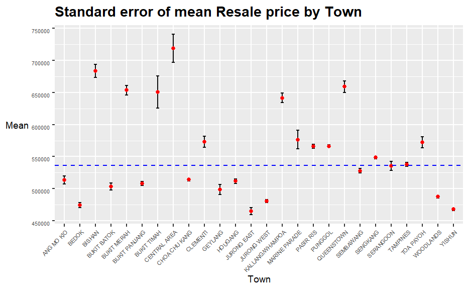
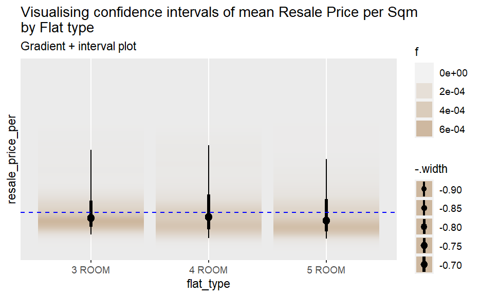
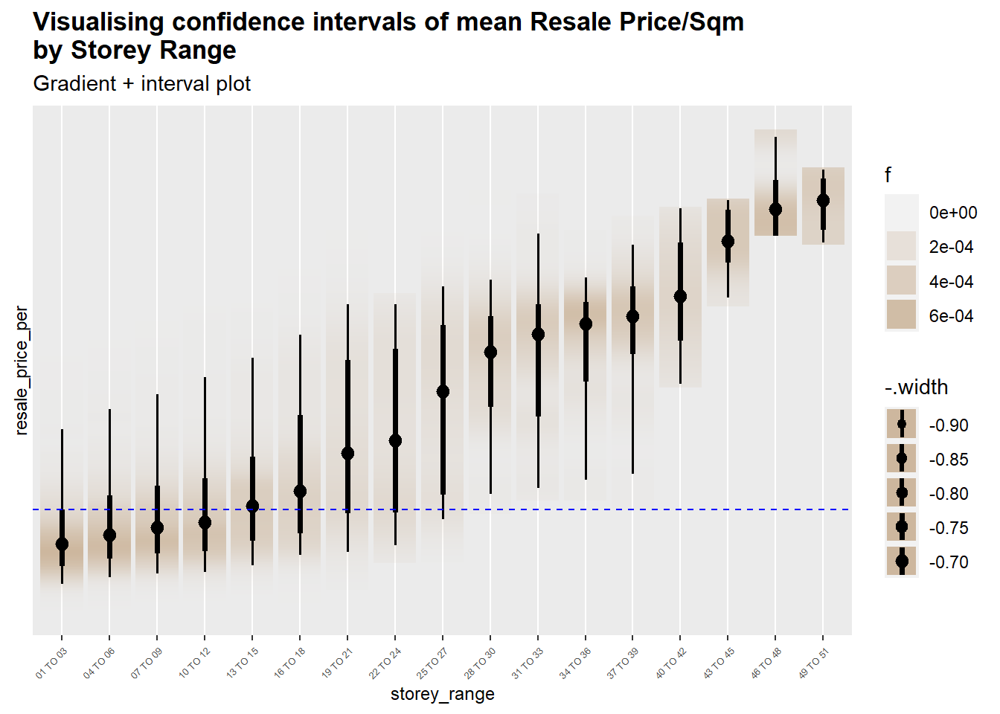

pacman::p_load(tidyverse, tidyr, ggstatsplot, funModeling, plotly, ungeviz, gganimate, DT, patchwork, ggdist)Take-home Exercise 3 Resale Flat Prices Analytical Visualisation
Our Tasks
In this take-home exercise, we are required to uncover the salient patterns of the resale prices of public housing property by residential towns and estates in Singapore by using appropriate analytical visualisation techniques learned in Lesson 4: Fundamentals of Visual Analytics. Students are encouraged to apply appropriate interactive techniques to enhance user and data discovery experiences.
For the purpose of this study, the focus should be on 3-ROOM, 4-ROOM and 5-ROOM types. The study period should be on 2022.
Data Used
Resale flat prices based on registration date from Jan-2017 onwards will be used to prepare the analytical visualisation. It is available at Data.gov.sg.
Packages Used
The Designing Tools
To achieve the purposes in this exercise, R packages tidyverse, tidyr and their extension will be used. Code chunk below will help us load these packages into R studio environment.
Data Preparation
Importing data
First, let us import the data in CSV form into R environment using code chunk below.
data<-read_csv("data/resale-flat-prices.csv")As information shows above, this data set includes 146701 rows and 11 columns. Let take a closer look at the data set by using code chunk below.
glimpse(data)
Data cleaning
See that the time is stored in character type, and we need to extract data only in 2022. Therefore, we need to first extract on the year number to recode the original data as shown below.
data$month<-str_extract(data$month,"(\\d+)")Now let us check the data column month.
head(data$month,10)
In addition, the remaining_lease no needs to contain month information, so we recode the values in the column to only retain its year part. See in code chunk below.
data$remaining_lease<-as.numeric(str_extract(data$remaining_lease,"(\\d+)"))See only year number is retained. Now let us filter the data frame by filtering data only in 2022.
data<-data%>%
filter(month == "2022")Next we need to only focus on 3 ROOM, 4 ROOM and 5 ROOM, so let first look at how many types are there of flat_type column. We use freq() function of funModeling package to draw the frequency graph of this column.
freq(data$flat_type) {width = “917”, hight = “577”, align = “central”}
{width = “917”, hight = “577”, align = “central”}
Noted that 4 ROOM type takes the most part of the total, followed by 5 ROOM and 3 ROOM. Now let us delete the redundant column month and block as shown below, and write a new data frame named resale-flat2022.csv to contract the data size.
data<-data%>%
filter(flat_type%in%
c("3 ROOM",
"4 ROOM",
"5 ROOM"))%>%
select(-1,-4)Now take a quick glimpse we can find that the variable lease_commence_date and remaining_lease have high association. We can plot an association plot to check their relationship.
ggscatterstats(
data = data,
x = lease_commence_date,
y = remaining_lease,
marginal = FALSE,
) As shown in plot above, we see that these two variables have high association. Therefore, we can just delete one column of them. Let us delete the column named remaining_lease.
As shown in plot above, we see that these two variables have high association. Therefore, we can just delete one column of them. Let us delete the column named remaining_lease.
data<-data%>%
select(-8)
write_csv(data,"data/resale-flat2022.csv")

Noted that the data size has been contacted to 1.6 MB.
Missing value checking
Before we start our analysis, we should first check missing values in this data table. Code chunk below will be used to show us the length of missing values in all columns in this data table.
data<-read_csv("data/resale-flat2022.csv")
summary(data[rowSums(is.na(data))!=0,]) town flat_type street_name storey_range
Length:0 Length:0 Length:0 Length:0
Class :character Class :character Class :character Class :character
Mode :character Mode :character Mode :character Mode :character
floor_area_sqm flat_model lease_commence_date resale_price
Min. : NA Length:0 Min. : NA Min. : NA
1st Qu.: NA Class :character 1st Qu.: NA 1st Qu.: NA
Median : NA Mode :character Median : NA Median : NA
Mean :NaN Mean :NaN Mean :NaN
3rd Qu.: NA 3rd Qu.: NA 3rd Qu.: NA
Max. : NA Max. : NA Max. : NA As shown in table above, no missing values in this data table.
Creating new variables
To remove the influence from area of a flat to its resale price, we create a new variable of resale price per sqm, and we name it as resale_price_per.
data<-data%>%
mutate(`resale_price_per` = resale_price/floor_area_sqm)
summary(data$resale_price_per) Min. 1st Qu. Median Mean 3rd Qu. Max.
3333 4838 5368 5736 6176 14731 Noted that the scale of the new created column is changed to 3333 to 14731.
Visualization Analysis
Exploratory descriptive analysis
First of all, let us do our EDA with our variables. This step plays a critical role to show the potential patterns behind the data. Let’s go!🥳
Distribution test
First of all, let take a look at the distribution of dependent variable resale_price by plotting its density plot using codes below.
set.seed(1234)
gghistostats(
data = data,
x = resale_price_per,
type = "p",
test.value = 60,
xlab = "Resale Price Per Sqm"
)+
scale_x_continuous(breaks = seq(0,max(data$resale_price), by = 100000))+
scale_y_continuous(breaks = seq(0,max(data$resale_price), by = 100000)) As shown in graph above, we see that the resale price per sqm is highly right skewed. That means most of the resale price per sqm congregated at lower prices, which is intuitively retional.
As shown in graph above, we see that the resale price per sqm is highly right skewed. That means most of the resale price per sqm congregated at lower prices, which is intuitively retional.
Visual statistical testing
Visualizing uncertainty
A point estimate is a single number, such as a mean. And uncertainty is expressed as standard error, confidence interval, or confidence interval. Now let’s plot interactive error bar plots by using 💼ggplot2() package to indicate the 95% confidence interval of mean resale price for different towns.
First of all, we need statistical features of the columns we care about.
group the observation by town,
computes the count of observations, mean, standard deviation and standard error of resale_price by town, and
save the output as a tibble data table called
sum_tbl.
sum_tbl <- data %>%
group_by(town) %>%
summarise(
n=n(),
mean=mean(resale_price_per),
sd=sd(resale_price_per)
) %>%
mutate(se=sd/sqrt(n-1))Let us take a look at the table we created.
knitr::kable(head(sum_tbl), format = 'html')| town | n | mean | sd | se |
|---|---|---|---|---|
| ANG MO KIO | 987 | 5939.674 | 1510.8351 | 48.11479 |
| BEDOK | 1270 | 5415.371 | 914.2950 | 25.66584 |
| BISHAN | 410 | 6675.493 | 1145.6494 | 56.64872 |
| BUKIT BATOK | 799 | 5496.811 | 1086.0031 | 38.44409 |
| BUKIT MERAH | 926 | 7224.374 | 1796.2098 | 59.05901 |
| BUKIT PANJANG | 855 | 5134.866 | 675.0116 | 23.09842 |
p<-ggplot(sum_tbl) +
geom_errorbar(aes(x=town,
ymin=mean-se,
ymax=mean+se),
width=0.2,
colour="black",
alpha=0.95,
size=0.5) +
geom_point(aes
(x=town,
y=mean),
stat="identity",
color="red",
size = 1.5,
alpha=1) +
geom_hline(yintercept = mean(data$resale_price_per),
linetype = "dashed",
color = "blue")+
ggtitle("Standard error of mean Resale Price per Sqm by Town")+
labs(x = "Town", y = "Mean")+
theme(plot.title = element_text(size=13, face = "bold"),
axis.title.y=element_text(angle=0, size = 9),
axis.title.y.left = element_text(vjust = 0.5),
axis.title.x.bottom = element_text( size = 9),
axis.text.y = element_text(size = 5,vjust = 1),
axis.text.x = element_text(angle = 45,size = 5, hjust = 1),
plot.caption = element_text(hjust = 0, colour = "blue", face = "italic"))
ggplotly(p)
datatable(sum_tbl, options = list(pageLength = 12))From the above plot, we can easily see that the mean resale price per sqm for all towns are above 5736 SG Dollar, but in some towns it is quite dispersed. For example, the town CENTRAL AREA has the highest mean resale price of about 8410 SG Dollar, but the range of Uncertainty is also large. On the other hand, towns like WOODLANDS and JURONG WEST have relatively low resale prices per sqm, but the standard error or their uncertainty is also small.
Generally, towns whose mean resale price is above the gross mean resale price have relatively large standard error, while whose mean resale price is under the gross mean resale price have relatively small standard error. 🤓
Now let us use a more convenient way of ggdist() package to plot error bar with 95% confidence interval for other variables, which are flat_type, street_name, storey_range, and flat_model.
data %>%
ggplot(aes(x = flat_type,
y = resale_price_per)) +
stat_gradientinterval(
fill = "bisque3",
p_limits = c(0.025, 0.975),
show.legend = TRUE
) +
geom_hline(yintercept = mean(data$resale_price_per),
linetype = "dashed",
color = "blue")+
scale_y_continuous(breaks = seq(0,max(data$resale_price_per), by = 100000))+
labs(
title = "Visualising confidence intervals of mean Resale Price per Sqm \nby Flat type",
subtitle = "Gradient + interval plot")From the chart above, we can easily see that the mean resale price per sqm is almost the same for each type of flat. But through the extent of shade of colors, we can see that there are subtle differences in standard error for resale price per sqm of these 3 types. For flat with 3 rooms, the mean resale price per sqm is relatively congregated than other two types.
data %>%
ggplot(aes(x = storey_range,
y = resale_price_per)) +
stat_gradientinterval(
fill = "bisque3",
p_limits = c(0.025, 0.975),
show.legend = TRUE
) +
scale_y_continuous(breaks = seq(0,max(data$resale_price_per), by = 100000))+
geom_hline(yintercept = mean(data$resale_price_per),
linetype = "dashed",
color = "blue")+
labs(
title = "Visualising confidence intervals of mean Resale Price/Sqm \nby Storey Range",
subtitle = "Gradient + interval plot")+
theme(plot.title = element_text(size=13, face = "bold"),
axis.title.y=element_text(angle=90, size = 9),
axis.title.y.left = element_text(vjust = 0.5),
axis.title.x.bottom = element_text( size = 9),
axis.text.y = element_text(size = 5,vjust = 1),
axis.text.x = element_text(angle = 45,size = 5, hjust = 1))
As shown in the above chart, we easily see that as the storey rises, the mean resale price per sqm is higher. In addition, the standard error of mean resale price per sqm of storey range from 16 to 27 is the largest among other storey ranges. And we can see that flats with storey above 13 are more expensive than the gross mean resale price per sqm.
Now let us take a look at the pattern within flat_model
data %>%
ggplot(aes(x = reorder(flat_model,
resale_price_per,
FUN = mean),
y = resale_price_per)) +
stat_gradientinterval(
fill = "bisque3",
p_limits = c(0.025, 0.975),
show.legend = TRUE
) +
scale_y_continuous(breaks = seq(0,max(data$resale_price_per), by = 100000))+
geom_hline(yintercept = mean(data$resale_price_per),
linetype = "dashed",
color = "blue")+
labs(
title = "Visualising confidence intervals of mean Resale Price/Sqm \nby Flat Model",
subtitle = "Gradient + interval plot")+
theme(plot.title = element_text(size=13, face = "bold"),
axis.title.y=element_text(angle=90, size = 9),
axis.title.y.left = element_text(vjust = 0.5),
axis.title.x.bottom = element_text( size = 9),
axis.text.y = element_text(size = 5,vjust = 1),
axis.text.x = element_text(angle = 45,size = 5, hjust = 1)) From chart above, it is easily to tell that the flat model named Type S1 has the highest mean resale price per sqm among others, with relatively large standard error. And flat with model named Model A2 has the lowest mean resale price per sqm among others, with relatively small standard error.
From chart above, it is easily to tell that the flat model named Type S1 has the highest mean resale price per sqm among others, with relatively large standard error. And flat with model named Model A2 has the lowest mean resale price per sqm among others, with relatively small standard error.
When we talk about visualizing uncertainty, though, we usually mean visualizing information about different values the data could plausibly be. Therefore, we can usually give a certain percentage of confidence for the audiences to see the interval of the average value for a specific variable, and we can also offer the audiences a friendly animation to see the resale price for different type of flat - 3 ROOM, 4 ROOM and 5 ROOM - when we sampling 5 times.
ggplot(data = data,
(aes(x = factor(flat_type), y = resale_price))) +
geom_point(position = position_jitter(
height = 0.3, width = 0.05),
size = 0.4, color = "#0072B2", alpha = 1/2) +
geom_hpline(data = sampler(5, group = flat_type), height = 0.6, color = "#D55E00") +
theme_bw()+
transition_states(.draw, transition_length = 1, state_length = 3)NULLVisual time series analysis
At last, let us take a look at the pattern between mean resale price per sqm and lease commence year, which is a time series graph and let us line chart instead of error bar plot.
p<-ggplot(data = data,
aes(x = lease_commence_date,
y = resale_price_per))+
geom_line(stat = "summary",
fun.y = "mean")+
geom_hline(yintercept = mean(data$resale_price_per),
linetype = "dashed",
color = "blue")+
scale_x_continuous(breaks = seq(min(data$lease_commence_date),max(data$resale_price_per), by = 5))+
labs(x = "Lease Commence Year",
y = "Mean Resale Price/Sqm",
title = "Line plot of Mean Resale Price/Sqm \nvs. Lease Commence Year ")
ggplotly(p)Noted that across the past 50 years, the gross mean resale price per sqm is showing a rising tendency. But in short period, from year 1975, the mean resale price per sqm is dropping down until year 1991. And a sharp increase in year 2006, followed by dramatic fluctuations in later years, reaching highest point of 9049 in year 2011.
Visual association of resale price/sqm vs. floor area
Now let us explore the association between mean resale price/sqm and floor area by plotting a scatter plot.